The Best Places to Visit in Myanmar
National Kandawgyi Botanical Gardens Pyin Oo Lwin
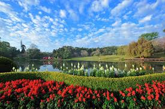 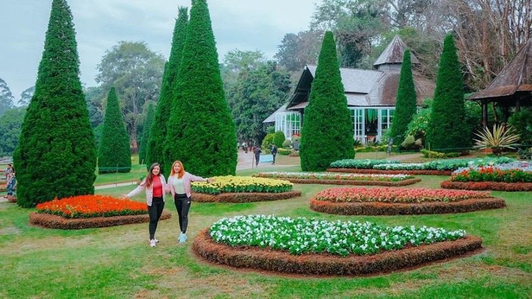 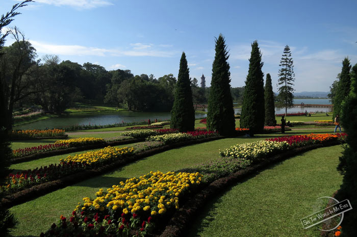 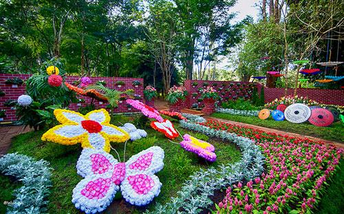 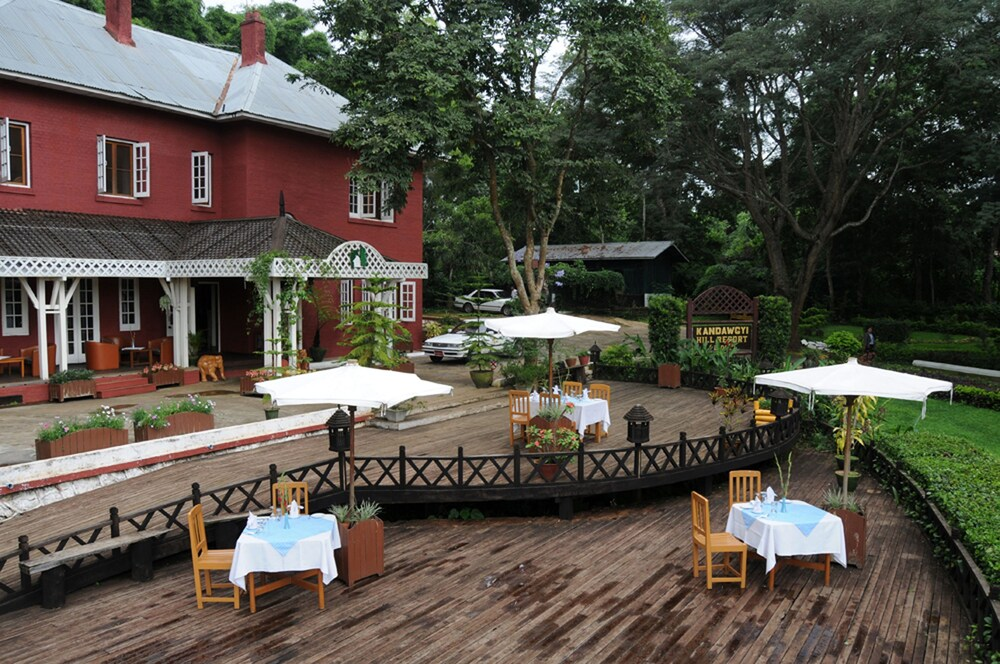The National Kandawgyi Botanical Gardens(Burmese: ကန်တော်ကြီး အမျိုးသား ရုက္ခဗေဒ ဥယျာဉ်; formerly National Botanical Gardens) is a 177 hectare botanical garden located in the Alpine town of Pyin U Lwin (formerly Maymyo), Burma, situated at an elevation of 1000 metres (3,605 ft) and 69 km (43 mi) by road from Mandalay.[1] The current official name is National Kandawgyi Garden.
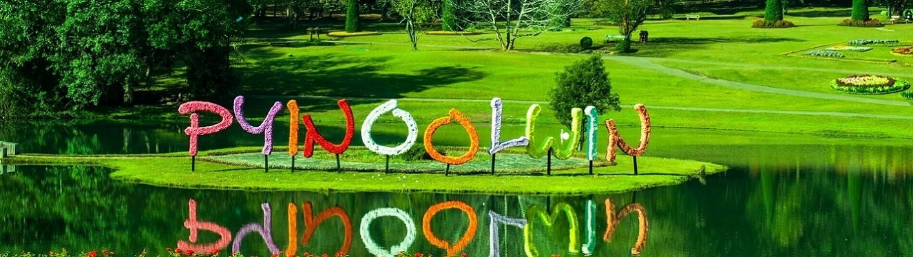The park was established in 1915 when Pyin Oo Lwin was known as Maymyo, a hill station established by the British as a summer capital to escape the blistering heat of Mandalay, some 65 kilometres away. Pyin Oo Lwin is blessed with a relatively mild climate with summer temperatures seldom exceeding 25°C falling to chilly night temperatures as low as 5°C in January. Fertile soils and ample summer rainfall make it a paradise for gardeners.
Tazaungdaing-Festival Taunggyi

 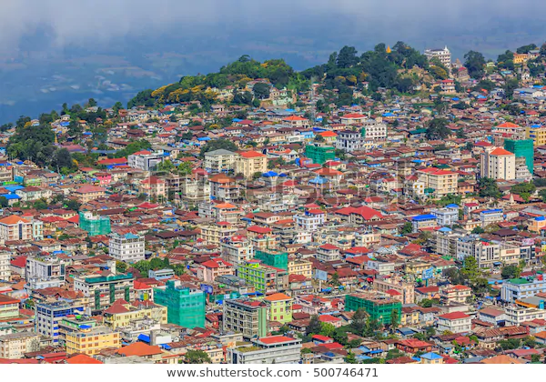
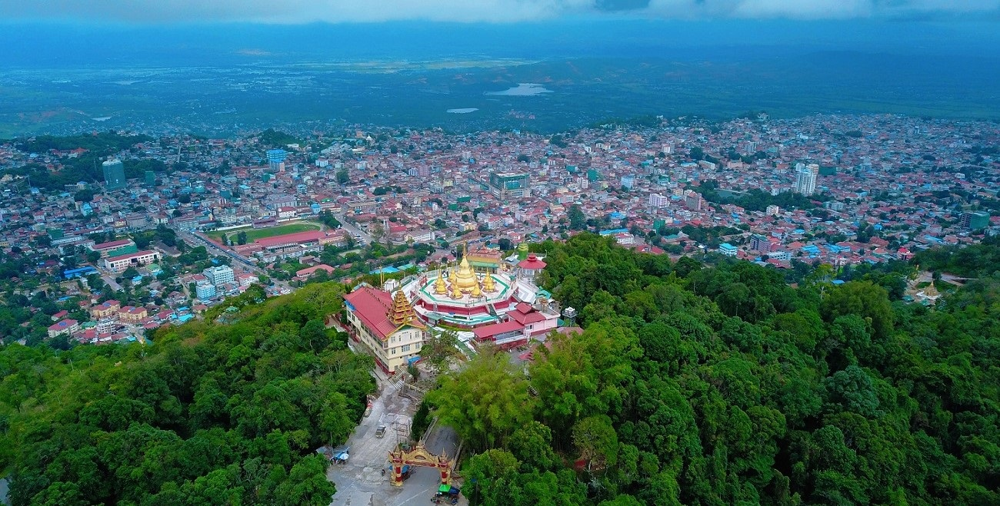
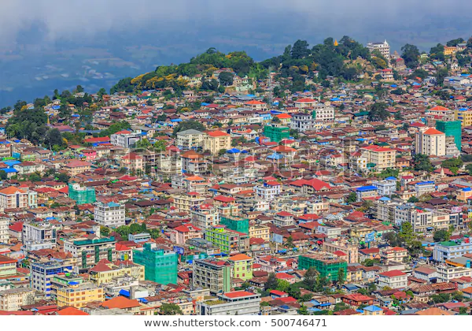
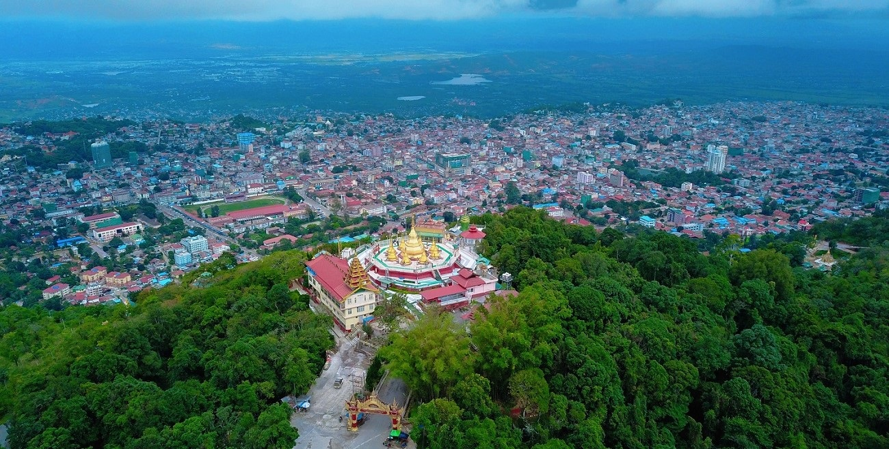
Perched on top of a mountain, Taunggyi is the capital of Shan State and by far the biggest city in eastern Myanmar. A multicultural town with a majority Shan population and significant Chinese, Muslim and Christian communities, Taunggyi is principally a trading post. Its markets are piled high with Chinese and Thai goods trucked in via the border crossings at Mong La and Tachileik, and destined to be sold on wholesale to markets in Yangon and Mandalay. Unless you’re pining for the big city (the Shan State version of it anyway) and/or consumer goods, there’s little of interest here for most visitors.
Old Bagan
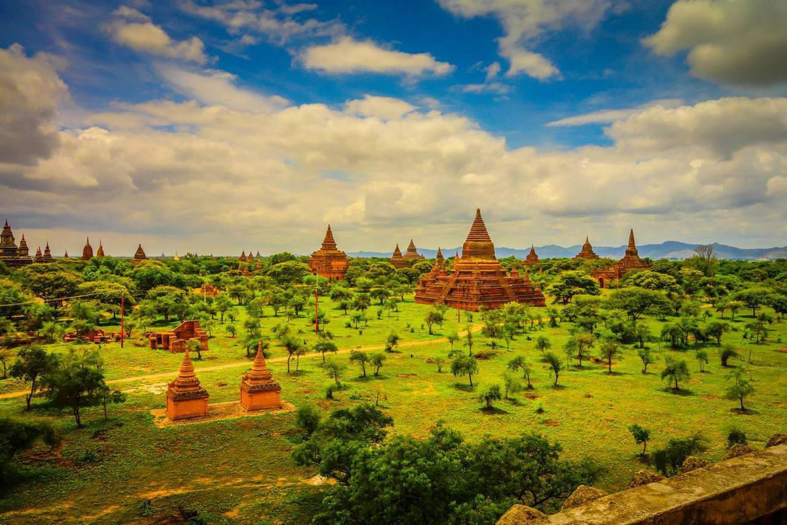 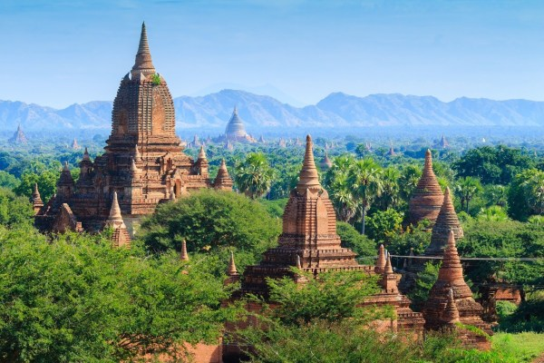The ancient city of Bagan is perhaps one of the most interesting places in Myanmar. Over 2,000 Buddhist monuments dot the Bagan Archeological Zone that’s spread across 26 square miles. The best way to take in the entirety of this breathtaking city is to hop into a hot air balloon and fly over it. The rides take place in the wee hours of the morning. Carry a good camera so you can take photos of the monuments from above.
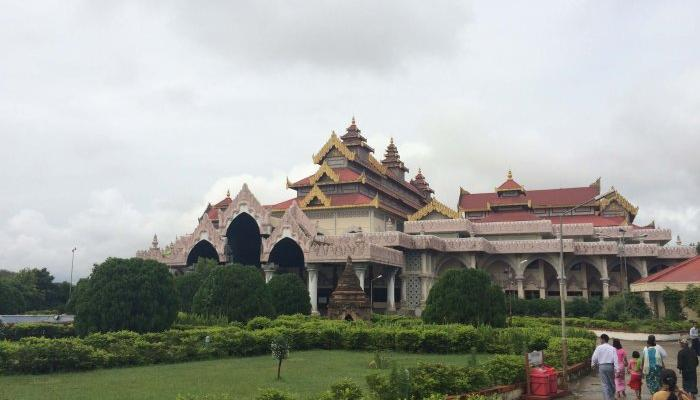
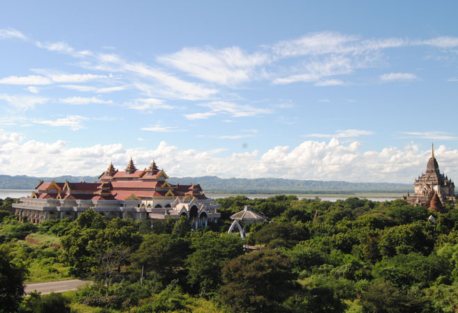
The core of the Bagan Archaeological Zone contains several of the main temple sites, city walls, a museum, a reconstructed palace, restaurants, a few shops and a cluster of midrange to top-end hotels. It’s right on a bend of the Ayeyarwady River and it's well worth wandering down to the waterfront to watch the comings and goings of the river trade.